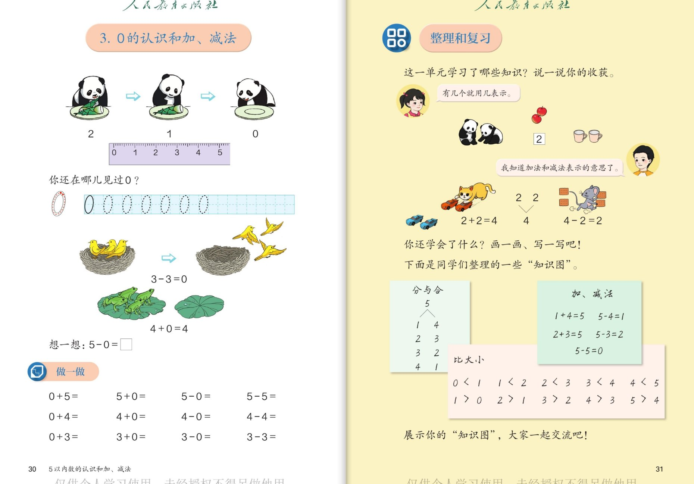
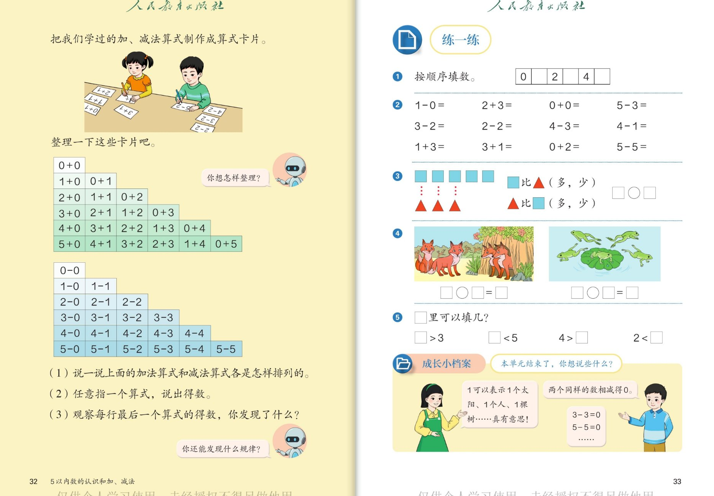

🧠 认知层 · 认识0、会算含0的算式
💪 强化层 · 会整理、会发现规律
🚀 拓展层 · 联系生活、学会总结
👨👩👧 使用建议：本组是第二单元的收尾内容，共 12 个问题。
"0"是孩子第一次认识特殊的数，重点是理解"0 表示一个也没有"和"0 是起点"两层意思；
整理和复习部分重在自己说收获、自己找规律。点击问题卡片展开参考答案。
1
🐼 0 的认识和加、减法 · 整理和复习（第30～31页）
认识0 · 含0的加减法 · 知识图

📖 课本第 30～31 页 · 0 的认识和加、减法 / 整理和复习
🧠 认知层认识 0 的两层意思
🐼
认知 1：熊猫吃竹笋：盘子里原来 2 个，吃了 1 个剩 1 个，再吃完剩几个？用哪个数表示？尺子上 0 排在哪里？
看答案
参考答案：
- 再吃完盘子里一个也没有了，用 0 表示：0 表示一个也没有；
- 尺子上 0 排在最前面（1 的前面），这里 0 表示起点，量东西从 0 开始。
💡 0 有两层意思：没有东西时用 0；开始的地方也是 0。0 和 1、2 一样，也是一个数！
🐤
认知 2：鸟窝图：窝里原有 3 只小鸟，全飞走了，还剩几只？算式怎么写？青蛙图 4+0=4 又是什么意思？
看答案
参考答案：
- 一只也不剩，是 0 只：算式 3 − 3 = 0；
- 4+0=4：荷叶上原来 4 只青蛙，又跳来 0 只（一只也没来），还是 4 只。
💡 两个一样的数相减得 0；加 0 或减 0，数都不变。
💪 强化层算得熟、说得清
🐸
强化 1：想一想：5−0=□。再算一算"做一做"里的题：0+5、5+0、5−5、0+4、4−0、4−4。你发现了什么规律？
看答案
参考答案：
- 5−0=5（从 5 里一个也不去掉，还是 5）；
- 0+5=5；5+0=5；5−5=0；0+4=4；4−0=4；4−4=0；
- 规律：①加 0、减 0，得数不变；②一个数减它自己，得数是 0。
🍒
强化 2：整理和复习：2 只熊猫、2 个樱桃、2 个杯子，东西不同，为什么都能用"2"表示？图中 2+2=4 和 4−2=2 又分别说了什么事？
看答案
参考答案：
- 数量表示的是"多少个"，不看东西的样子——熊猫、樱桃、杯子都是 2 个，所以都用 2 表示；
- 2+2=4：2 边玩具车加 2 辆推来的玩具车，合起来 4 辆；
- 4−2=2：4 块砖头被小老鼠搬走 2 块，还剩 2 块。
🚀 拓展层0 在身边、整理收获
🔍
拓展 1：书上问"你还在哪儿见过 0？"想一想、找一找，生活中的 0 都藏在哪里？
看答案
参考示例（不唯一）：
- 门牌号 105、电话号码里的 0；
- 比赛记分牌上的 0 分；温度计上的 0℃；
- 数字 10 里面也有 0（表示十位上满了一个"十"）。
🌟 找到 5 处以上，就是"生活中的数学家"！
🗺️
拓展 2（小小总结家）：书上小朋友整理了三张知识图——分与合、加·减法、比大小。看着这三张图，说一说这个单元你学会了什么？
看答案
参考要点：
- 分与合：5 可以分成 1 和 4、2 和 3……（会说 2~5 的分与合）；
- 加、减法：1+4=5、5−4=1……会把两部分合起来、会从总数里去掉；
- 比大小：0<1、1<2……4<5（会用 >、<、= 比大小）；
- 还可以补充：认识了 0、认识了"第几"。
🌟 能自己说出"学会了什么"，比做对题更了不起！
2
🗂️ 算式卡片整理 · 练一练 · 成长小档案（第32～33页）
整理算式 · 找规律 · 单元总结

📖 课本第 32～33 页 · 算式卡片整理 / 练一练 / 成长小档案
🧠 认知层会填数、会口算
🔢
认知 1：练一练第①题"按顺序填数"：0、□、2、□、4、□。缺的是哪几个数？你是按什么顺序填的？
看答案
参考答案：
- 从 0 到 5：0、1、2、3、4、5，缺的是 1、3、5；
- 按从小到大的顺序，后一个数总比前一个数多 1。
⏱️
认知 2：口算过关（第②题）：1−0、2+3、0+0、5−3、3−2、2−2、4−3、4−1、1+3、3+1、0+2、5−5。
看答案
参考答案：
- 1−0=1；2+3=5；0+0=0；5−3=2；
- 3−2=1；2−2=0；4−3=1；4−1=3；
- 1+3=4；3+1=4；0+2=2；5−5=0。
🌈 全对可以奖励一颗星；错了的题用小棒摆一摆再算。
💪 强化层比多少、看图列式
🔷
强化 1：第③题：5 个正方形和 3 个三角形比一比：谁比谁多？谁比谁少？在□里填上合适的数，○里填上>或<。
看答案
参考答案：
- 正方形 5 个，三角形 3 个；
- 正方形比三角形多：5 > 3；三角形比正方形少：3 < 5。
💡 用一一对应的方法比：一个正方形对一个三角形，正方形多出 2 个。
🦊
强化 2：第④题看图列式：狐狸图（2 只在外面，3 只在洞口）□○□=□；青蛙图（4 只都在荷叶上）□○□=□。
看答案
参考答案：
- 狐狸图：2 只和 3 只合起来，2 + 3 = 5；
- 青蛙图：荷叶上 4 只青蛙，没有跳走的，4 − 0 = 4（也可以写 4 + 0 = 4）。
🌈 列式前先想清楚：图上是"合起来"还是"去掉"？再决定用 + 还是 −。
🚀 拓展层发现规律、总结成长
🔎
拓展 1：观察算式卡片表：加法表每一行的第一个算式和最后一个算式有什么特点？每一行的得数有什么变化？"你还能发现什么规律？"
看答案
参考答案（发现不唯一，说出道理即可）：
- 加法表每行第一个算式都是"几+0"（0+0、1+0、2+0……），最后一个都是"0+几"，得数都等于第一个数；
- 加法表每一行里，从左往右：第一个加数每次多 1，第二个加数每次少 1，得数不变；
- 减法表同一行里，减号前面都不变，减号后面的数每次多 1，得数每次少 1；
- 每行最后一个减法算式都是"几−几"，得数都是 0。
💡 会找规律，以后背口诀、学乘法表都会轻松很多！
🌱
拓展 2（成长小档案）：书上小朋友说"1 可以表示 1 个太阳、1 个人、1 棵树……真有意思！""两个同样的数相减得 0。"本单元结束了，你想说些什么？
看答案
参考示例（说说自己的收获）：
- "我认识了 0～5，会数、会读、会写了！"
- "我会用 >、<、= 比大小，知道开口对着大数。"
- "我知道了几和第几不一样，还会用分与合算加减法。"
- "我还会看算式编小故事了呢！"
🌟 把自己的成长说给爸爸妈妈听，就是最好的"成长小档案"！